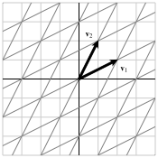

Print preview
Worksheet \(\S 3.2\text{:}\) Bases and Coordinate Systems (Solutions)
2. Preview Activity 3.2.1.
Consider the vectors
\begin{equation*}
\vvec_1 = \twovec{2}{1},
\vvec_2 = \twovec{1}{2}
\end{equation*}
in \(\real^2\text{,}\) which are shown in Figure 22.

(a)
Indicate the linear combination \(\vvec_1 -
2\vvec_2\) on the figure.
(b)
Express the vector \(\twovec{-3}{0}\) as a linear combination of \(\vvec_1\) and \(\vvec_2\text{.}\)
(c)
Find the linear combination \(10\vvec_1 -
13\vvec_2\text{.}\)
(d)
Express the vector \(\twovec{16}{-4}\) as a linear combination of \(\vvec_1\) and \(\vvec_2\text{.}\)
(e)
Explain why every vector in \(\real^2\) can be written as a linear combination of \(\vvec_1\) and \(\vvec_2\) in exactly one way.
3. Definition: Basis.
4. Activity: Bases.
We will look at some examples of bases in this activity.
-
In the preview activity, we worked with the set of vectors in \(\real^2\text{:}\)\begin{equation*} \vvec_1 = \twovec{2}{1}, \vvec_2 = \twovec{1}{2}\text{.} \end{equation*}Explain why these vectors form a basis for \(\real^2\text{.}\)
-
Consider the set of vectors in \(\real^3\)\begin{equation*} \vvec_1 = \threevec{1}{1}{1}, \vvec_2 = \threevec{0}{1}{-1}, \vvec_3 = \threevec{1}{0}{-1} \end{equation*}and determine whether they form a basis for \(\real^3\text{.}\)
-
Do the vectors\begin{equation*} \vvec_1 = \threevec{-2}{1}{3}, \vvec_2 = \threevec{3}{0}{-1}, \vvec_3 = \threevec{1}{1}{0}, \vvec_4 = \threevec{0}{3}{-2} \end{equation*}form a basis for \(\real^3\text{?}\)
-
If a set of vectors \(\vvec_1,\vvec_2,\ldots,\vvec_n\) forms a basis for \(\real^m\text{,}\) what can you guarantee about the pivot positions of the matrix\begin{equation*} \left[\begin{array}{rrrr} \vvec_1 \amp \vvec_2 \amp \ldots \amp \vvec_n \end{array}\right]\text{?} \end{equation*}
-
If the set of vectors \(\vvec_1,\vvec_2,\ldots,\vvec_n\) is a basis for \(\real^{10}\text{,}\) how many vectors must be in the set?
Solution.
-
The matrix \(\left[\begin{array}{rr} \vvec_1 \amp \vvec_2 \end{array}\right]\) is row equivalent to the identity matrix so it has a pivot position in every row. The span of the columns is therefore \(\real^2\text{.}\) There is also a pivot position in every column, which means that the columns are linearly independent.
-
We note that\begin{equation*} \left[\begin{array}{rrr} 1 \amp 0 \amp 1 \\ 1 \amp 1 \amp 0 \\ 1 \amp -1 \amp -1 \end{array}\right] \sim \left[\begin{array}{rrr} 1 \amp 0 \amp 0 \\ 0 \amp 1 \amp 0 \\ 0 \amp 0 \amp 1 \end{array}\right]\text{.} \end{equation*}Since there is a pivot position in every row, the span of the vectors is \(\real^3\text{.}\) Since there is a pivot position in every column, the vectors are linearly independent. Consequently, this set of vectors forms a basis for \(\real^3\text{.}\)
-
The matrix whose columns are the vectors \(\vvec_1\text{,}\) \(\vvec_2\text{,}\) \(\vvec_3\text{,}\) and \(\vvec_4\) has dimensions \(3\times4\text{.}\) Therefore, there cannot be a pivot position in every column, which tells us that the columns cannot be linearly independent. Therefore, the set of vectors do not form a basis for \(\real^3\text{.}\)
-
Putting these vectors into a matrix produces the identity matrix, which has a pivot position in every row and every column. Therefore, the span of the vectors is \(\real^3\text{,}\) and they are linearly independent.
-
There must be a pivot position in every row and every column.
-
A basis for \(\real^{10}\) must have \(10\) vectors. Because the associated matrix must have a pivot position in every row and every column, there must be the same number of columns as there are rows. Since the vectors are \(10\)-dimensional, there must be 10 vectors.
5. Fact: Bases.
Solution.
the matrix whose columns are the vectors row reduces to the identity matrix. This means that \(n=m\text{.}\) I.e., it takes \(m\) linearly independent vectors to form a basis for \(\R^m\text{.}\)
We call the set of vectors \(\{\evec_1, \evec_2, \dots, \evec_n\}\) the standard basis for \(\R^n\text{.}\)
6. Bases and Coordinate Systems.
Bases are useful because they give us a way to communicate points in space.
Solution.
A choice of basis creates a coordinate system in which we can communicate vectors based on how they are written as a linear combination of the basis vectors.
See Example 3.2.6.
7. Activity: Coordinate Systems.
Let’s begin with the basis \(\bcal =
\{\vvec_1,\vvec_2\}\) of \(\real^2\) where
\begin{equation*}
\vvec_1 = \twovec{3}{-2},
\vvec_2 = \twovec{2}{1}\text{.}
\end{equation*}
-
If the coordinates of \(\xvec\) in the basis \(\bcal\) are \(\coords{\xvec}{\bcal} = \twovec{-2}{4}\text{,}\) what is the vector \(\xvec\text{?}\)
-
If \(\xvec = \twovec{3}{5}\text{,}\) find the coordinates of \(\xvec\) in the basis \(\bcal\text{;}\) that is, find \(\coords{\xvec}{\bcal}\text{.}\)
-
Find a matrix \(A\) such that, for any vector \(\xvec\text{,}\) we have \(\xvec = A\coords{\xvec}{\bcal}\text{.}\) Explain why this matrix is invertible.
-
Using what you found in the previous part, find a matrix \(B\) such that, for any vector \(\xvec\text{,}\) we have \(\coords{\xvec}{\bcal} = B\xvec\text{.}\) What is the relationship between the two matrices \(A\) and \(B\text{?}\) Explain why this relationship holds.
-
Suppose we consider the standard basis\begin{equation*} \ecal = \{\evec_1,\evec_2\}\text{.} \end{equation*}What is the relationship between \(\xvec\) and \(\coords{\xvec}{\ecal}\text{?}\)
-
Suppose we also consider the basis\begin{equation*} \ccal = \left\{\twovec{1}{2}, \twovec{-2}{1}\right\}\text{.} \end{equation*}Find a matrix \(C\) that converts coordinates in the basis \(\ccal\) into coordinates in the basis \(\bcal\text{;}\) that is,\begin{equation*} \coords{\xvec}{\bcal} = C \coords{\xvec}{\ccal}\text{.} \end{equation*}You may wish to think about converting coordinates from the basis \(\ccal\) into the standard coordinate system and then into the basis \(\bcal\text{.}\)
Solution.
-
We know that \(\xvec=-2\vvec_1+4\vvec_2=\twovec{2}{8}\text{.}\)
-
We solve the linear system \(c_1\vvec_1+c_2\vvec_2=\twovec{3}{5}\) to find \(\coords{\xvec}{\bcal}=\twovec{-1}{3}\text{.}\)
-
If \(\xvec=\twovec{c_1}{c_2}\text{,}\) we have\begin{equation*} \xvec=c_1\vvec_1+c_2\vvec_2 = \left[\begin{array}{rr} 3 \amp 2 \\ -2 \amp 1 \\ \end{array}\right]\twovec{c_1}{c_2} = A \coords{\xvec}{\bcal}\text{.} \end{equation*}This matrix \(A\text{,}\) whose columns are the vectors \(\vvec_1\) and \(\vvec_2\text{,}\) has a pivot position in every row and every column because the vectors form a basis. It is, therefore, row equivalent to the identity matrix and hence invertible.
-
Since we have \(\xvec = A\coords{\xvec}{\bcal}\text{,}\) we also have \(A^{-1}\xvec = \coords{\xvec}{\bcal}\text{.}\)
-
We have\begin{equation*} \xvec=\left[\begin{array}{rr} 1\amp0 \\ 0 \amp 1 \\ \end{array}\right] \coords{\xvec}{\ecal} = I\coords{\xvec}{\ecal} = \coords{\xvec}{\ecal}\text{.} \end{equation*}
-
If we define \(B\) to be the matrix whose columns are \(\twovec{1}{2}\) and \(\twovec{-2}{1}\text{,}\) then\begin{equation*} \coords{\xvec}{\bcal} = A^{-1}\xvec = A^{-1}B\coords{\xvec}{\ccal}\text{.} \end{equation*}Therefore, \(C=A^{-1}B = \left[\begin{array}{rr} -\frac{3}{7} \amp -\frac{4}{7} \\ \frac{8}{7} \amp -\frac{1}{7} \end{array}\right]\text{.}\)
8. Summary: Change of Coordinates.
Let \(\bcal = \{\vvec_1, \vvec_2, \dots, \vvec_n\}\) be a basis for \(\R^n\text{,}\) and \(P_\bcal\) be the matrix whose columns are the basis vectors.